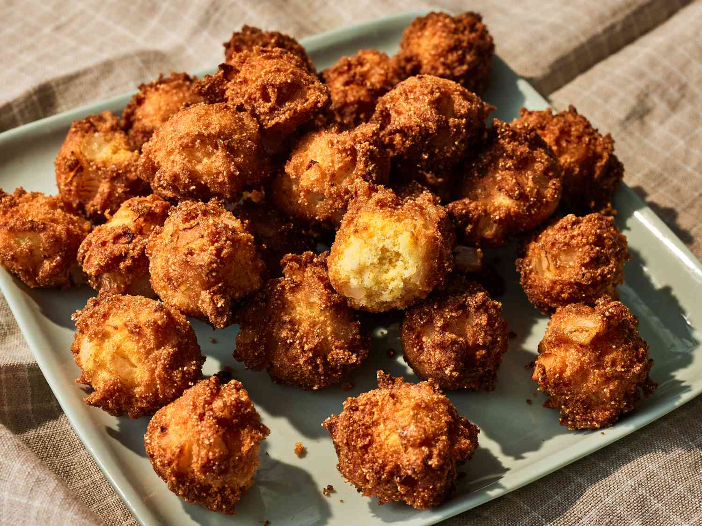

A staple of Southern fried food in the United States, hushpuppies are an extremely popular snack consisting of deep-fried cornmeal batter. The batter is sometimes enriched by the addition of onions, garlic, corn, and peppers. Hushpuppies are best when served steaming hot with tartar sauce or a smoked trout dip.
Meal prep time : 20 minutes
Servings : 8